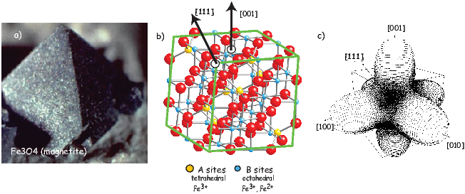
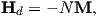
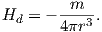
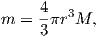
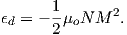
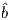
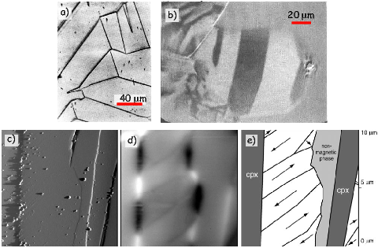

Rocks often contain assemblages of ferromagnetic minerals dispersed within a
matrix of diamagnetic and paramagnetic minerals. In later chapters we will be
concerned with the magnetization of these assemblages, but here we continue our
investigation of the behavior of individual particles. In Chapter 3 we learned that
in some crystals electronic spins work in concert to create a spontaneous
magnetization that remains in the absence of an external field. The basis of
paleomagnetism is that these ferromagnetic particles carry the record of
ancient magnetic fields. What allows the magnetic moments to come into
equilibrium with the geomagnetic field and then what fixes that equilibrium
magnetization into the rock so that we may measure it millions or even billions of
years later? We will begin to answer these questions over the next few
chapters.
We will start with the second part of the question: what fixes magnetizations in
particular directions? A basic principle is that ferromagnetic particles have
various contributions to the magnetic energy which controls their magnetization.
No matter how simple or complex the combination of energies may become, the
grain will seek the configuration of magnetization which minimizes its total
energy. The short answer to our question is that certain directions within
magnetic crystals are at lower energy than others. To shift the magnetization
from one “easy” direction to another requires energy. If the barrier is
high enough, the particle will stay magnetized in the same direction
for very long periods of time – say billions of years. In this chapter we
will address the causes and some of the consequences of these energy
barriers for the magnetization of rocks. Note that in this chapter we will be
dealing primarily with energy densities (volume normalized energies),
as opposed to energy and will distinguish the two by the convention
that energies are given with the symbol E and energy densities with
ϵ.
In Chapter 6, we will discuss the behavior of common magnetic minerals, but to
develop the general theory, it is easiest to focus on a single mineral. We
choose here the most common one, magnetite. It has a simple, cubic
structure and has been the subject intensive study. However, we will
occasionally introduce concepts appropriate for other magnetic minerals where
appropriate.
The simplest permanently magnetized particles are quasi-uniformly magnetized.
These so-called single domain (SD) particles have spins that act in concert,
staying as parallel (or anti-parallel) as possible. As particles get larger, the
external energy can be minimized by allowing neighboring spins to diverge
somewhat from strict parallelism; these particles are referred to as pseudo-single
domain or PSD. Eventually, the spins organize themselves into regions with
quasi-uniform magnetization (magnetic domains) separated by domain walls and
are called multi-domain (MD) particles. These more complicated spin
structures are very difficult to model and most paleomagnetic theory is
based on the single domain approximation. Therefore we begin with
a discussion of the energies of uniformly magnetized (single-domain)
particles.
We learned in Chapter 3 that some crystalline states are capable of ferromagnetic
behavior because of quantum mechanical considerations. Electrons in neighboring
orbitals in certain crystals “know” about each other’s spin states. In order to
avoid sharing the same orbital with the same spin (hence having the same
quantum numbers – not allowed by Pauli’s exclusion principle), electronic spins
in such crystals act in a coordinated fashion. They will be either aligned parallel
or antiparallel according to the details of the interaction. This exchange energy
density (ϵe) is the source of spontaneous magnetization and is given for a pair of
spins by:

where Je is the exchange integral and Si and Sj are spin vectors. Depending on
the details of the crystal structure (which determines the size and sign of the
exchange integral), exchange energy is at a minimum when electronic spins are
aligned parallel or anti-parallel.
We define here a parameter that we will use later: the exchange constant
A = JeS2∕a where a is the interatomic spacing. A = 1.33 x 10-11 Jm-1 for
magnetite, a common magnetic mineral.
Recalling the discussion in Chapter 3, while s orbitals which are spherical, the 3d
electronic orbitals “poke” in certain directions. Hence spins in some directions
within crystals will be easier to coordinate than in others. We can illustrate this
using the example of magnetite, a common magnetic mineral (Figure 4.1a).
Magnetite octahedra (Figure 4.1a), when viewed at the atomic level
(Figure 4.1b) are composed of one ferrous (Fe2+) cation, two ferric (Fe3+)
cations and four O2- anions. Each oxygen anion shares an electron with two
neighboring cations in a covalent bond.
In Chapter 3 we mentioned that in some crystals, spins are aligned anti-parallel,
yet there is still a net magnetization, a phenomenon we called ferrimagnetism.
This can arise from the fact that not all cations have the same number of
unpaired spins. Magnetite, with its ferrous (4 mb) and ferric (5 mb) states is a
good example. There are three iron cations in a magnetite crystal giving a
total of 14 mb to play with. Magnetite is very magnetic, but not that
magnetic! From Figure 4.1b we see that the ferric ions all sit on the
tetrahedral (A) lattice sites and there are equal numbers of ferrous and ferric
ions sitting on the octahedral (B) lattice sites. The unpaired spins of
the cations in the A and B lattice sites are aligned anti-parallel to one
another because of superexchange (Chapter 3) so we have 9 mb on the
B sites minus 5 mb on the A sites for a total of 4 mb per unit cell of
magnetite.
We know from experience that there are energies associated with magnetic fields.
Just as a mass has a potential energy when it is placed in the gravitational field
of another mass, a magnetic moment has an energy when it is placed in
a magnetic field. We have seen this energy briefly in Sections 1.4 and
Equation 3.4. This energy has many names (magnetic energy, magnetostatic
energy, Zeeman energy, etc.). Here we will work with the volume normalized
magnetostatic interaction energy density (ϵm). This energy density essentially
represents the interaction between the magnetic lines of flux and the magnetic
moments of the electronic spins. It is energy that aligns magnetic compass
needles with the ambient magnetic field. We find the volume normalized form
(in units of Jm-3) by substituting |M| = |m|v1
2 (see Chapter 1) into
Equation 3.4:
 | (4.1) |
ϵm is at a minimum when the magnetization M is aligned with the field B.
Single-domain particles have a quasi-uniform magnetization and the application
of a magnetic field does not change the net magnetization, which remains at
saturation (Ms). The direction of all the magnetic spins could swing coherently
toward the applied field. Yet the magnetizations in many particles do not rotate
freely toward the magnetic field (or we would not have paleomagnetism!).
There is another contribution to the energy of the magnetic particle
associated with the magnetic crystal itself. This energy depends on the
direction of magnetization in the crystal – it is anisotropic – and is called
anisotropy energy. Anisotropy energy creates barriers to free rotation of the
magnetization within the magnetic crystal, which lead to energetically
preferred directions for the magnetization within individual single-domain
grains.
There are many causes of anisotropy energy. The most important ones derive
from the details of crystal structure (magnetocrystalline anisotropy energy), the
state of stress within the particle (magnetostriction), and the shape of the
particle, (shape anisotropy). We will consider these briefly in the following
subsections.
For equant single-domain particles or particles with low saturation magnetizations,
the crystal structure dominates the magnetic energy. In such cases, the so-called
easy directions of magnetization are crystallographic directions along which
magnetocrystalline energy is at a minimum. The energy surface shown in
Figure 4.1c represents the magnetocrystalline anisotropy energy density, ϵa for
magnetite at room temperature. The highest energy bulges are in directions
perpendicular to the cubic faces ([001, 010, 100]). The lowest energy dimples are
along the body diagonals ([111]). Magnetite (above about 120K) has a
cubic structure with direction cosines α1,α2,α3. These direction cosines
are the angles between a given direction and the crystallographic axes
[100, 010, 001] – see Appendix A.3.5 for review of direction cosines). For
such a crystal the magnetocrystalline anisotropy energy density is given
by:
where K1 and K2 are empirically determined magnetocrystalline anisotropy
constants. In the case of (room temperature) magnetite, K1 is -1.35 x 104 Jm-3.
Note that the units of the Ki are in Jm-3, so ϵa is in units of energy per unit
volume (an energy density). If you work through the magnetocrystalline
equation, you will find ϵa is zero parallel to the [100] axis, K1∕4 parallel to the
[110] and K1∕3 + K2∕27 parallel to the [111] direction (the body diagonal). So
when K1 is negative, the [111] direction (body diagonal) has the minimum
energy. This is the reason that there is a dimple in the energy surface along that
direction in Figure 4.1c.
As a consequence of the magnetocrystalline anisotropy energy, once the
magnetization is aligned with an easy direction, work must be done to change it.
In order to switch from one easy axis to another (e.g. from one direction along
the body diagonal to the opposite), the magnetization has to traverse a path over
an energy barrier which is the difference between the energy in the easy direction
and that in the intervening hard direction. In the case of magnetite at room
temperature, we have this energy barrier as ϵ[111]-ϵ[110] or to first order
K1∕3 - K1∕4 = K1∕12.
Because electronic interactions depend heavily on inter atomic spacing,
magnetocrystalline anisotropy constants are a strong function of temperature
(see Figure 4.2). In magnetite, K1 changes sign at a temperature known as the
isotropic point. At the isotropic point, there is no large magnetocrystalline
anisotropy. The large energy barriers that act to keep the magnetizations parallel
to the body diagonal are gone and the spins can wander more freely through the
crystal. Below the isotropic point, the energy barriers rise again, but with a
different topology in which the crystal axes are the energy minima and the body
diagonals are the high energy states.
At room temperature, electrons hop freely between the ferrous and ferric ions on
the B lattice sites, so there is no order. Below about 120 K, there is
an ordered arrangement of the ferrous and ferric ions. Because of the
difference in size between the two, the lattice of the unit cell becomes
slightly distorted and becomes monoclinic instead of cubic. This transition
occurs at what is is known as the Verwey temperature (Tv). Although
the isotropic point (measured magnetically) and the Verwey transition
(measured electrically) are separated in temperature by about 15o, they are
related phenomena (the ordering and electron hopping cause the change in
K1).
The change in magnetocrystalline anisotropy at low temperature can
have a profound effect on the magnetization. In Figure 4.3 we show a
typical (de)magnetization curve for magnetite taken from the “Rock
magnetic bestiary” web site maintained at the Institute for Rock Magnetism:
http://irm.umn.edu/bestiary. There is a loss of magnetization at around 100
K. This loss is the basis for low-temperature demagnetization (LTD). However,
some portion of the magnetization always remains after low temperature cycling
(called the low temperature memory), so the general utility of LTD may be
limited.
Cubic symmetry (as in the case of magnetite) is just one of many types of crystal
symmetries. One other very important form is the uniaxial symmetry which can
arise from crystal shape or structure. The energy density for uniaxial magnetic
anisotropy is:
 | (4.3) |
Here the magnetocrystalline constants have been designated Ku1,Ku2 to
distinguish them from K1,K2 used before. In this equation, when the largest
uniaxial anisotropy constant, Ku1, is negative, the magnetization is constrained
to lie perpendicular to the axis of symmetry. When Ku1 > 0, the magnetization
lies parallel to it.
An example of a mineral dominated by uniaxial symmetry is hematite, a mineral
with hexagonal crystal symmetry. The magnetization of hematite is quite
complicated, as we shall learn in Chapters 6 and 7, but one source is
magnetization is spin-canting (see Chapter 3) within the basal plane of the
hexagonal crystal. Within the basal plane, the anisotropy constant is very low
and the magnetization wanders fairly freely. However, the anisotropy energy away
from the basal plane is strong, so the magnetization is constrained to lie within
the basal plane.
Exchange energy depends strongly on the details of the physical interaction
between orbitals in neighboring atoms with respect to one another, hence
changing the positions of these atoms will affect that interaction. Put another
way, straining a crystal will alter its magnetic behavior. Similarly, changes in the
magnetization can change the shape of the crystal by altering the shapes of the
orbitals. This is the phenomenon of magnetostriction. The magnetic energy
density caused by the application of stress to a crystal be approximated
by:
 where λ is an experimentally derived constant, σ is the stress, and θ is the angle
of the stress with with respect to the c crystallographic axis. Moskowitz (1993b)
measured the magnetostriction constants parallel to [111] and [100] in magnetite
and found λ111 and λ100 to be 78.2x10-6 and -21.8x10-6 respectively. λ is given
by:
where λ is an experimentally derived constant, σ is the stress, and θ is the angle
of the stress with with respect to the c crystallographic axis. Moskowitz (1993b)
measured the magnetostriction constants parallel to [111] and [100] in magnetite
and found λ111 and λ100 to be 78.2x10-6 and -21.8x10-6 respectively. λ is given
by:
 so
λ for magnetite is about 38 x 10-6. Stress has units of Nm-2 which have the
same fundamental units as Jm-3, so λ is dimensionless. Note the similarity in
form of magnetostriction and uniaxial anisotropy giving rise to a single “easy
axis” within the crystal.
so
λ for magnetite is about 38 x 10-6. Stress has units of Nm-2 which have the
same fundamental units as Jm-3, so λ is dimensionless. Note the similarity in
form of magnetostriction and uniaxial anisotropy giving rise to a single “easy
axis” within the crystal.
There is one more important source of magnetic anisotropy: shape. To
understand how crystal shape controls magnetic energy, we need to understand
the concept of the internal demagnetizing field of a magnetized body. In
Figure 4.4a we show the magnetic vectors within a ferromagnetic crystal. These
produce a magnetic field external to the crystal that is proportional to the
magnetic moment (see Chapter 1). This external field is identical to a field
produced by a set of free poles distributed over the surface of the crystal
(Figure 4.4b). The surface poles do not just produce the external field, they also
produce an internal field shown in Figure 4.4c. The internal field is known as the
demagnetizing field (Hd). Hd is proportional to the magnetization of the body
and is sensitive to the shape. For a simple sphere in Figure 4.4a and applied
field condition shown in Figure 4.4d, the demagnetizing field is given
by:

where N is a demagnetizing factor determined by the shape. In fact, the
demagnetizing factor depends on the orientation of M within the crystal and
therefore is a tensor (see Appendix A.3.5 for review of tensors). The more
general equation is Hd = N ⋅ M where Hd and M are vectors and N is a 3 x
3 tensor. For now, we will simplify things by considering the isotropic
case of a sphere in which N reduces to the single value scalar quantity
N.
For a sphere, the surface poles are distributed over the surface such that there
are none at the “equator” and most at the “pole” (see Figure 4.4d). Potential
field theory shows that the external field of a uniformly magnetized body is
identical to that of a centered dipole moment of magnitude m = vM (where v is
volume). At the equator of the sphere as elsewhere, Hd = -NM. But the
external field at the equator is equal to the demagnetizing field just inside the
body because the field is continuous across the body. We can find the equatorial
(tangential) demagnetizing field at the equator by substituting in the
equatorial colatitude θ = 90∘ into Hθ in Equation 1.8 from Chapter 1),
so:

Using the fact that magnetization (in units of Am-1) is the moment (in units of
Am2) per unit volume (in units of m3) and the volume of a sphere is 4
3πr3, we
have:

so substituting and solving for Hd we get Hd = -1
3M, hence N = 1
3.
Different directions within a non-spherical crystal will have different distributions
of free poles (see Figures 4.4e,f). In fact the surface density of free poles is given
by σm = M ⋅ . Because the surface pole density depends on the direction of
magnetization, so too will N. In the case of a prolate ellipsoid magnetized
parallel to the elongation axis a (Figure 4.4e), the free poles are farther apart
than across the grain, hence, intuitively, the demagnetizing field, which depends
on 1∕r2, must be less than in the case of a sphere. Thus, Na <1
3. Similarly, if the
ellipsoid is magnetized along b (Figure 4.4e), the demagnetizing field is stronger
or Nb > 1
3.
Getting back to the magnetostatic energy density, ϵm = M⋅B, remember that B
includes both the external field Be = -μoHe and the internal demagnetizing field
μoN ⋅ M. Therefore, magnetostatic energy density from both the external and
internal fields is given by:
 | (4.4) |
The two terms in Equation 4.4 are the by now familiar magnetostatic energy
density ϵm, and the magnetostatic self energy density or the demagnetizing energy
density ϵd. ϵd can be estimated by “building” a magnetic particle and
considering the potential energy gained by each incremental volume dv as it is
brought in (-μoMdv ⋅ Hd) and integrating. The 1
2 appears in order to avoid
counting each volume element twice and the v disappears because all the
energies we have been discussing are energy densities – the energy per unit
volume.
For the case of a uniformly magnetized sphere, we get back to the relation
Hd = -NM and ϵd simplifies to:
In the more general case of a prolate ellipsoid, M can be represented by the two
components parallel to the a and b axes (see Figure 4.4f) with unit vectors
parallel to them â, . So, M = M cosθâ + M sinθ . Each component of M has an
associated demagnetizing field Hd = -NaM cosθâ - NbM sinθ
. Each component of M has an
associated demagnetizing field Hd = -NaM cosθâ - NbM sinθ where Na,Nb
are the eigenvalues of the tensor N (the values of the demagnetizing tensor along
the principal axes a and b). In this case, the demagnetizing energy can be written
as:
where Na,Nb
are the eigenvalues of the tensor N (the values of the demagnetizing tensor along
the principal axes a and b). In this case, the demagnetizing energy can be written
as:

 | (4.6) |
In an ellipsoid with three unequal axes a,b,c, Na + Nb + Nc = 1 (in SI; in
cgs units the sum is 4π). For a long needle-like particle, Na ≃ 0 and
Nb = Nc ≃ 1
2. A useful approximation for nearly spherical particles is
Na = 1
3[1 - 2
5(2 - b
a - c
a)] (Stacey and Banerjee, 1974). For more spheroids, see
Nagata (1961, p. 70) and for the general case, see Dunlop and Özdemir (1997).
In the absence of an external field, the magnetization will be parallel
to the long axis (θ = 0) and the magnetostatic energy density is given
by:
 | (4.7) |
Note that the demagnetizing energy in Equation 4.6 has a uniaxial form,
directionally dependent only on θ, with the constant of uniaxial anisotropy
Ku = 1
2ΔNμoM2. ΔN is the difference between the largest and smallest values
of the demagnetizing tensor Nc - Na.
For a prolate ellipsoid Nc = Nb and choosing for example c∕a = 1.5 we find that
Na -Nc =~ 0.16. The magnetization of magnetite is 480 kAm-1, so Ku ≃ 2.7 x
104 Jm-3. This is somewhat larger than the absolute value of K1 for
magnetocrystalline anisotropy in magnetite (K1= -1.35 x 104 Jm-3), so the
magnetization for even slightly elongate grains will be dominated by uniaxial
anistropy controlled by shape. Minerals with low saturation magnetizations (like
hematite) will not be prone to shape dominated magnetic anisotropy,
however.
Paleomagnetists worry about how long a magnetization can remain fixed within a
particle and we will begin to discuss this issue later in the chapter. It is worth
pointing out here that any discussion of magnetic stability will involve magnetic
anisotropy energy because this controls the energy required to change a magnetic
moment from one easy axis to another. One way to accomplish this change
is to apply a magnetic field sufficiently large that its magnetic energy
exceeds the anisotropy energy. The magnetic field capable of flipping
the magnetization of an individual uniformly magnetized particle (at
saturation, or Ms) over the magnetic anisotropy energy barrier is the
microscopic coercivity Hk. For uniaxial anisotropy (K = Ku) and for cubic
magnetocrystalline anisotropy (K = K1), microscopic coercivity is given
by:
respectively (see Dunlop and Özdemir, 1997 for a more complete derivation). For
elongate particles dominated by shape anisotropy, Hk reduces to ΔNM. [Note
that the units for coercivity as derived here are in Am-1, although they are often
measured using instruments calibrated in tesla. Technically, because the field
doing the flipping is inside the magnetic particle and B (measured in tesla)
depends on the magnetization M as well as the field H (Equation 1.4), coercivity
should be written as μoHk if the units are quoted in tesla. Microscopic
coercivity is another parameter with many names: flipping field, switching
field, intrinsic coercivity and also more loosely, the coercive field and
coercivity. We will come back to the topic of coercivity in Chapter 5.
]
So far we have been discussing hypothetical magnetic particles that are uniformly
magnetized. Particles with strong magnetizations (like magnetite) have self
energies that quickly become quite large because of the dependence on the square
of the magnetization. We have been learning about several mechanisms that tend
to align magnetic spins. In fact in very small particles of magnetite (< 40 nm),
the spins are essentially lined up. The particle is uniformly magnetized and we
called it single domain (SD). In larger particles (~80 nm) the self energy exceeds
the other exchange and magnetocrystalline energies and crystals have distinctly
non-uniform states of magnetization.
There are many strategies possible for magnetic particles to reduce self energy.
Numerical models (called micromagnetic models) can find internal magnetization
configurations that minimize the energies discussed in the preceding sections.
Micromagnetic simulations for magnetite particles (e.g. Schabes and Bertram,
1988) allow us to peer into the state of magnetization inside magnetic particles.
These simulations give a picture of increasing complexity from so-called flower to
vortex (Figure 4.5) remanent states. These particles share many properties of the
uniformly magnetized single domain particles and are called pseudo-single
domain (PSD) particles.
As particles grow larger (>~200 nm), they break into multiple magnetic
domains, separated by narrow zones of rapidly changing spin directions called
domain walls. Magnetic domains can take many forms. We illustrate a few in
Figure 4.6. The uniform case (single domain) is shown in Figure 4.6a. The
external field is very large because the free poles are far apart (at opposite
ends of the particle). When the particle organizes itself into two domains
(Figure 4.6b), the external field is reduced by about a factor of two. In the case
of four lamellar domains (Figure 4.6c), the external field is quite small. The
introduction of closure domains as in Figure 4.6d reduces the external field to
nothing.
As you might already suspect, domain walls are not “free”, energetically
speaking. If, as in Figure 4.7a, the spins simply switch from one orientation to
the other abruptly, the exchange energy cost would be very high. One way to
get around this to spread the change over several hundred atoms, as
sketched in Figure 4.7b. The wall width δ is wider and the exchange
energy price is much less. However, there are now spins in unfavorable
directions from a magnetocrystalline point of view (they are in “hard”
directions). Exchange energy therefore favors wider domain walls while
magnetocrystalline anisotropy favors thin walls. With some work (see e.g.,
Dunlop and Özdemir, 1997, pp. 117-118), it is possible to come up with the
following analytical expressions for wall width (δw) and wall energy density
(ϵw):
where A is the exchange constant (see Section 4.1.1) and K is the magnetic
anisotropy constant (e.g., Ku or K1). Note that ϵw is the energy density per unit
wall area, not per volume. Plugging in values for magnetite given previously we
get δw = 90 nm and ϵw = 3x 10-3Jm-2.
In Figure 4.8 we plot the self energy (Equation 4.7) and the wall energy (ϵw
from Equation 4.9) for spheres of magnetite. We see that the wall energy in
particles with diameters of some 50 nm is less than the self energy, yet the width
of the walls about twice as wide as that. So the smallest wall is really more like
the vortex state and it is only for particles larger than a few tenths of a micron
that true domains separated by discrete walls can form. Interestingly,
this is precisely what is predicted from micromagnetic modelling (e.g.,
Figure 4.5).
How can we test the theoretical predictions of domain theory? Do domains really
exist? Are they the size and shape we expect? Are there as many as we would
expect? In order to address these questions we require a way of imaging magnetic
domains. Bitter (1931) devised a way for doing just that. Magnetic domain walls
are regions with large stray fields (as opposed to domains in which the spins are
usually parallel to the sides of the crystals to minimize stray fields). In the Bitter
technique magnetic colloid material is drawn to the regions of high field gradients
on highly polished sections allowing the domain walls to be observed (see
Figure 4.9a).
There are by now other ways of imaging magnetic domains. We will not review
them all here, but will just highlight the ways that are more commonly used in
rock and paleomagnetism. The magneto-optical Kerr effect or MOKE uses the
interaction between polarized light and the surface magnetic field of the target.
The light interacts with the magnetic field of the sample which causes
a small change in the light’s polarization and ellipticity. The changes
are detected by reflecting the light into nearly-crossed polarizers. The
longitudinal Kerr effect can show the alignment of magnetic moments in
the surface plane of the sample. Domains with different magnetization
directions show up as lighter or darker regions in the MOKE image (see
Figure 4.9b.)
Another common method for imaging magnetic domains employs a technique
known as magnetic force microscopy. Magnetic force microscopy (MFM) uses a
scanning probe microscope that maps out the vertical component of the magnetic
fields produced by a highly polished section. The measurements are made with a
cantilevered magnetic tip that responds to the magnetic field of the sample. In
practice, the measurements are made in two passes. The first establishes the
topography of the sample (Figure 4.9c). Then in the second pass, the tip is
raised slightly above the surface and by subtracting the topographic only signal
the attraction of the magnetic surface can be mapped (Figure 4.9d). Figure 4.9e
shows an interpretation of the magnetic directions of different magnetic
domains.
We have gone some way toward answering the questions posed at the beginning
of the chapter. We see now that anisotropy energy, with contributions
from crystal structure, shape and stress, that inhibits changes in the
magnetic direction thereby offering a possible mechanism whereby a given
magnetization could be preserved for posterity. We also asked the question of
what allows the magnetization to come into equilibrium with the applied
magnetic field in the first place; this question requires a little more work to
answer. The key to this question is to find some mechanism which allows
the moments to “jump over” magnetic anisotropy energy barriers. One
such mechanism is thermal energy ET , which was given in Chapter 3
as:

We know from statistical mechanics that the probability P of finding a grain with
a given thermal energy sufficient to overcome some anisotropy energy Ea and
change from one easy axis to another is P = exp(-Ea∕ET ). Depending on the
temperature, such grains may be quite rare, and we may have to wait
some time t for a particle to work itself up to jumping over the energy
barrier.
Imagine a block of material containing a random assemblage of magnetic
particles that are for simplicity uniformly magnetized and dominated by
uniaxial anisotropy. Suppose that this block has some initial magnetization
Mo and is placed in an environment with no ambient magnetic field.
Anisotropy energy will tend to keep each tiny magnetic moment in its
original direction and the magnetization will not change over time. At
some temperature, certain grains will have sufficient energy to overcome
the anisotropy energy and flip their moments to the other easy axis.
As the energy surface is spherical, with no dimples or protruberances,
there is no preferred direction and, over time, the magnetic moments will
become random. Therefore, the magnetization as a function of time in this
simple scenario will decay to zero. The equation governing this decay
is:
where t is time and τ is an empirical constant called the relaxation time.
Relaxation time is the time required for the remanence to decay to 1∕e
of Mo. This equation is the essence of what is called Néel theory (see,
e.g., Néel, 1955). The value of τ depends on the competition between
magnetic anisotropy energy and thermal energy. It is a measure of the
probability that a grain will have sufficient thermal energy to overcome the
anisotropy energy and switch its moment. Therefore in zero external
field:
where C is a frequency factor with a value of something like 1010 s-1. The
anisotropy energy is given by the dominant anisotropy parameter K (either
Ku,K1, or λ) times the grain volume v.
Thus, the relaxation time is proportional to anisotropy constant and volume, and
is inversely related to temperature. Relaxation time τ varies rapidly with small
changes in v and T. To see how this works, we can take Ku for slightly
elongate cuboids of magnetite (length to width ratio of 1.3 to 1) and
evaluate relaxation time as a function of particle width (see Figure 4.10).
There is a sharp transition between grains with virtually no stability
(τ is on the order of seconds) and grains with stabilities of billions of
years.
Grains with τ ≃ 102 - 103 seconds have sufficient thermal energy to overcome the
anisotropy energy frequently and are unstable on a laboratory time scale. In zero
field, these grain moments will tend to rapidly become random, and in an applied
field, also tend to align rapidly with the field. The net magnetization is related to
the field by a Langevin function (see Section 3.2.2 in Chapter 3). Therefore, this
behavior is quite similar to paramagnetism, hence these grains are called
superparamagnetic (SP). Such grains can be distinguished from paramagnets,
however, because the field required to saturate the moments is typically much
less than a tesla, whereas that for paramagnets can exceed hundreds of
tesla.
We are now in a position to pull together all the threads we have considered in
this chapter and make a plot of what sort of magnetic particles behave as
superparamagnets, which should be single domain and which should
be multi-domain according to our simple theories. We can estimate the
superparamagnetic to single domain threshold for magnetite as a function of
particle shape by finding for the length (2a) that gives a relaxation time of 100
seconds as a function of width to length ratio (b∕a) for parallelopipeds of
magnetite (heavy blue line in Figure 4.11). To do this, we follow the logic of
Evans and McElhinny (1969) and Butler and Banerjee (1975). In this Evans
diagram, we estimated relaxation time using Equation 4.11, plugging in values of
K as either the magnetocrystalline effective anisotropy constant ( 1_
12K1) or the
shape anisotropy constant (1
2ΔNμoM2), whichever was less. We also show the
curve at which relaxation time is equal to 1 Gyr, reinforcing the point that very
small changes in crystal size and shape make profound differences in relaxation
time. The figure also predicts the boundary between the single domain
field and the two domain field, when the energy of a domain wall is less
than the self energy of a particle that is uniformly magnetized. This can
be done by evaluating wall energy with Equation 4.9 for a wall along
the length of a parallelopiped and area (4ab) as compared to the self
energy (1
2μoNaM2v) for a given length and width to length ratio. When
the wall energy is less than the self energy, we are in the two domain
field.
Figure 4.11 suggests that there is virtually no SD stability field for equant
magnetite; particles are either SP or MD (multi-domain). As the width to length
decreases (the particle gets longer), the stability field for SD magnetite expands.
Of course micromagnetic modelling shows that there are several transitional
states between uniform magnetization (SD) and MD, i.e. the flower and vortex
remaent states (see Fabian et al., 1996), but Figure 4.11 has enormous predictive
power and the version of Butler and Banerjee (1975), (which is slightly
different in detail) continues to be used extensively. It is worth pointing out
however, that the size at which domain walls appear in magnetite is poorly
constrained because it depends critically on the exact shape of the particle, its
state of stress and even its history of exposure to past fields. Estimates
in the literature range from as small as 20 nm to much larger (up to
100 nm) depending on how the estimates are made. Nonetheless, it is
probably true that truly single domain magnetite is quite rare in nature, yet
more complicated states are difficult to treat theoretically. Therefore
most paleomagnetic studies rely on predictions made for single domain
particles.
SUPPLEMENTAL READING: Dunlop and Özdemir (1997), Chapters 2.8 and
5.
Problem 1
Assume that the magnetization of magnetite is about 480 mAm-1 and using
values for other parameters from the text, write a Python program to calculate
the following:
a) Self energy for a sphere 1, 10 and 100 μm in diameter. [Note that the
“energies” in the text are energy densities or energy/unit volume.]
b) Magnetostatic (shape) anisotropy energy for an ellipsoid whose principal
semi-axis is 1 μm and whose major and minor semi-axes are each 0.25 μm. You
may use the “nearly spherical” approximation in the text.
c) The critical radius of a sphere at which wall energy equals self energy.
Problem 2
Calculate grain diameter for magnetite spheres with τs of 10-1, 10, 102, 103, 105,
109, 1015 seconds. Use values for Boltzmann’s constant, C (the frequency factor)
and |K1| at room temperature (300K).
Problem 3
Consider a highly elongate rod (needle-shaped grain) of ferromagnetic
material.
a) Explain why the demagnetizing factor along the long axis of the rod is about
zero and about one half across the axis.
b) For a needle shaped grain of magnetite (Ms = 4.8 × 105 Am-1), what external
magnetic field is required to magnetize the rod to saturation along the diameter
(perpendicular to the long axis)?
c) What is the maximum microscopic coercivity of magnetite (assume an
infinitely long grain)?